INTM-SHU 247 · Game Design from Life
今天只练后半段：循环如何要求一个世界。Today we only practice the second half: how a loop requires a world.
Xingchen Zhang · NYU Shanghai · 2026-09-12
上周交的系统图Last week’s system graphs
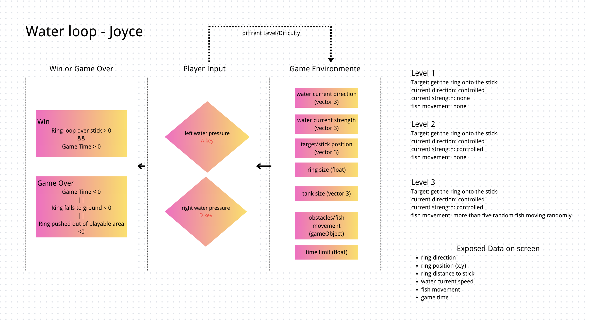
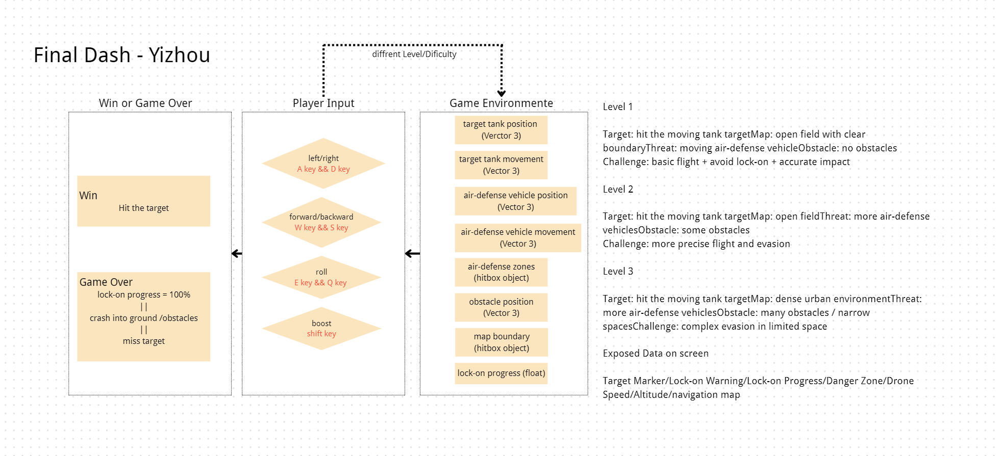
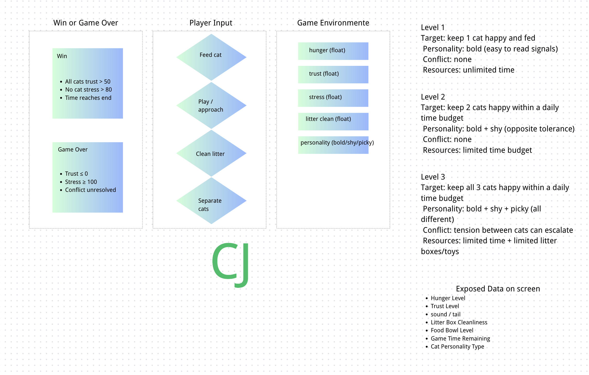
课堂作业。先有动作和数据，再问这些动作需要什么地方。From your homework. Actions and data first; then ask what place those actions need.
1 · 每一步都有文献1 · Each step has a source
点任意一步，看对应文献。Tap a step to see the source.
Dewey 1934 · Art as Experience
2 · 翻转句2 · The flip
不要先发明有趣的世界，再给它找玩法。
先让不同的挑战要求一个地方，
再让这个地方要求一段历史。
Do not invent a world first and then look for a way to play it.
Let different challenges require a place.
Let that place require a history.
马里奥的核心动作是跳。水管、坑、砖块改变的是跳的条件。先有跳，才有蘑菇王国。Mario’s core action is jump. Pipes, pits, and bricks change the conditions for jumping. The jump comes first; then the Mushroom Kingdom.
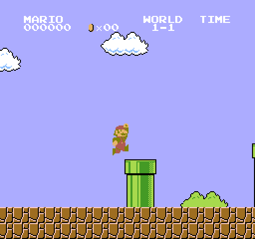
《超级马里奥兄弟》World 1-1。动作是跳；水管是跳的条件。Super Mario Bros., World 1-1. The action is jump; the pipe is a condition of jumping.
Anthropy & Clark 2014 · A Game Design Vocabulary · Juul 2005 · Half-Real
3 · 整门课的两段3 · Two halves of the course
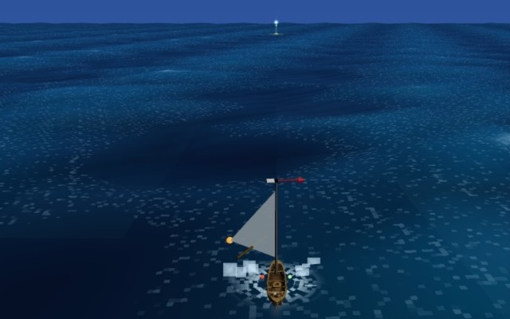
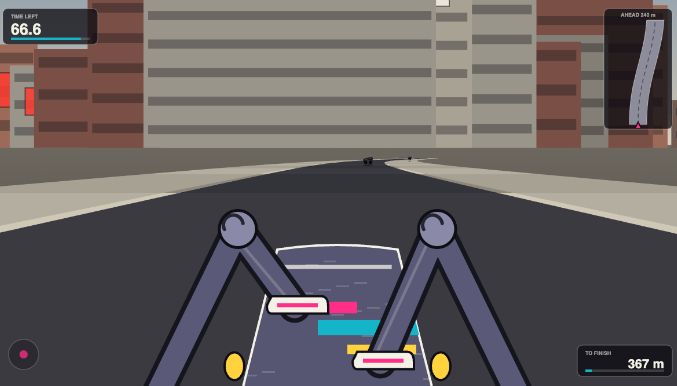
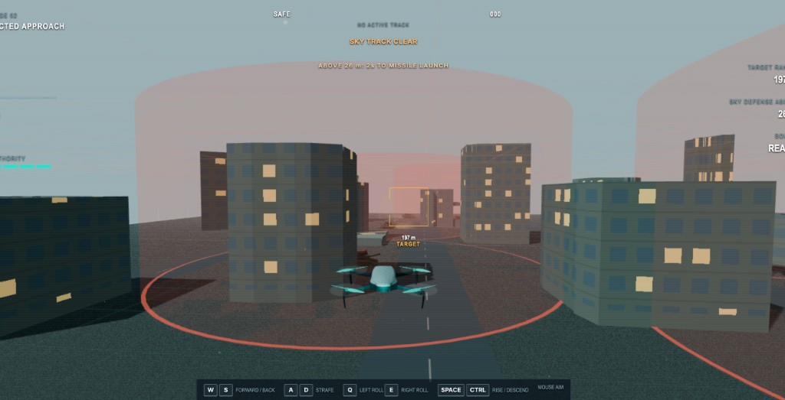
动作和挑战：从那件难事里抽出玩家做什么、什么让它变难。不同的挑战：同一组动作，换参数。美学：这个世界用什么感觉说话，不是「奇幻 / 写实」标签。Actions and challenges: extract what the player does and what makes it hard. Different challenges: the same actions, new parameters. Aesthetics: how this world feels — not a “fantasy / realism” label.
Dewey 1934 · Art as Experience, Ch.1 / Ch.3
Part 1 · 同一循环的不同挑战Part 1 · Different challenges, same loop
挑战 = 系统变量的一种组合 + 对玩家能力的一种要求。A challenge is one combination of system variables and one demand on the player.
顺风 / 侧风 / 逆风。动词仍是读风、转舵、调帆。Tailwind / crosswind / upwind. The verbs stay: read the wind, steer, trim.
「第 2 关加更多敌人。」“Level 2 adds more enemies.”
Koster 2013 · A Theory of Fun
按关系排，不要按关卡号排Order by relation, not by level number
《旷野之息》：雨让攀爬失效，所以卓拉领地常年下雨。如果格鲁德住在雪山，机制还成立吗？Breath of the Wild: rain stops climbing, so Zora’s Domain rains all the time. If the Gerudo lived in snow, would the mechanic still hold?
Jenkins 2004 · Game Design as Narrative Architecture · Juul 2005 · emergence / progression
Part 2 · 地点由这组挑战决定Part 2 · The challenge decides the place
如果这种挑战出现在真实世界，会是什么地形、气候、建筑或制度？不成立，说明这个地方是被挑战要求出来的。If this challenge happened in the real world, what terrain, weather, building, or institution would it be? If it would not hold, the place is required by the challenge.
横流 + 窄航道 → 海峡。信息不明 + 只有一个窗口 → 深夜大厅。Cross-current + narrow channel → a strait. Unclear information + one window → a late-night lobby.
「难度 3」。这座山「代表」焦虑。“Difficulty 3.” A mountain that “represents” anxiety.
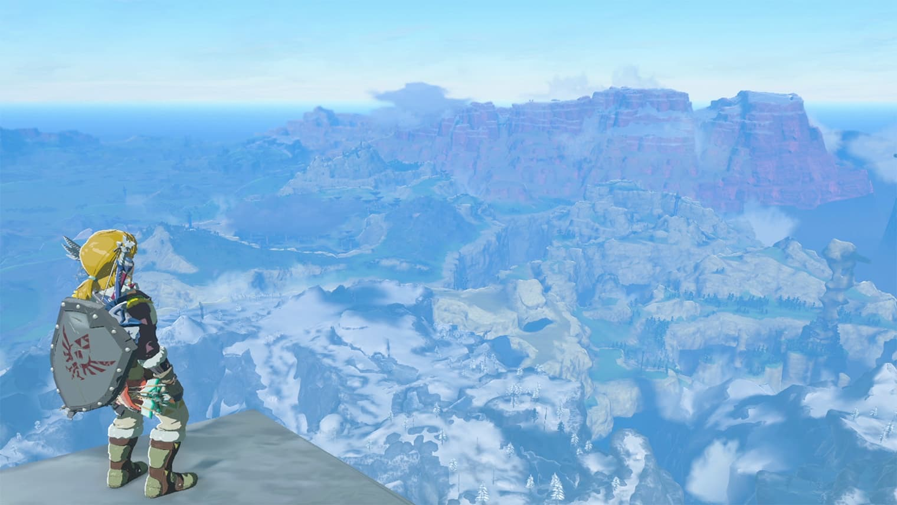
《塞尔达传说：旷野之息》赫布拉雪山。攀爬和寒冷要求这座山。Breath of the Wild, Hebra Mountains. Climbing and cold require this mountain.
Gibson 1979 · The Ecological Approach to Visual Perception
五种不好玩的游戏世界Five unfun game worlds
玩法简单，缺少变化。Play is simple and barely changes.
同一组动作，只把数值调大：风速 1、2、3。没有新的难法，也没有海峡。Same actions, bigger values: wind 1 / 2 / 3. No new challenge, and no strait.
先写沉船爱情，再找操作。Write the shipwreck romance, then look for controls.
第 1、2、3 关一个比一个难。Levels 1, 2, 3 — each one harder.
地点只用来代表情绪。山「代表」焦虑。The place only stands for a feeling. The mountain “represents” anxiety.
Juul 2005 · Half-Real · Bogost 2007 · Procedural Rhetoric · Koenitz 2015
Part 3 · 为地点设定一段人文历史背景Part 3 · Give the place a human history
设计提醒：循环 → 一组挑战 → 地点 → 痕迹（这里出过什么事）→ 再决定有没有任务 → 最后才选气氛Design reminder: loop → a set of challenges → place → traces (what happened here) → then decide whether there is a quest → mood last
沉船、折断的桅杆、错误的航标。Wrecks, broken masts, wrong beacons.
救援任务 = 把痕迹做成可玩的事。顺序不能反。A rescue quest = a playable use of those traces. Do not reverse the order.
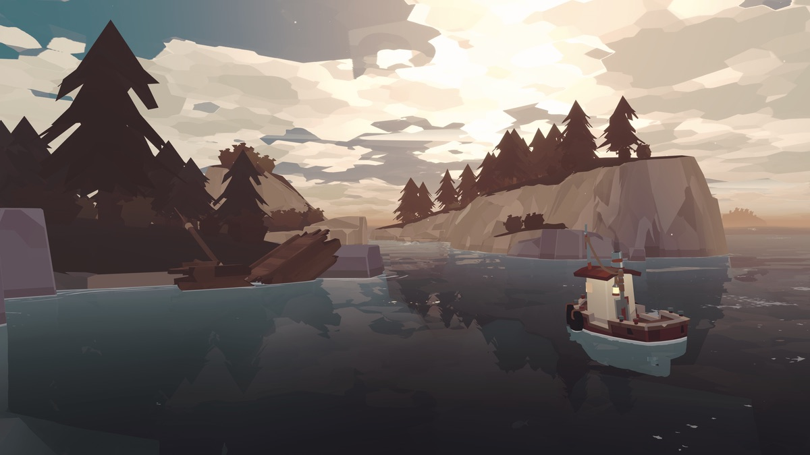
Dredge。海面上的沉船是痕迹：这里出过事，还留着。Dredge. The wreck on the water is a trace: something happened here, and it is still there.
Fernández-Vara 2011 · Game Spaces Speak Volumes
Part 4 · 选一个美学，不一致的删掉Part 4 · Pick one aesthetic. Delete the rest.
这些地方如果属于同一种气氛，会是什么感觉？If these places share one mood, what is that mood?
同一套驾船循环 · 民俗恐怖The same sailing loop · folk horror
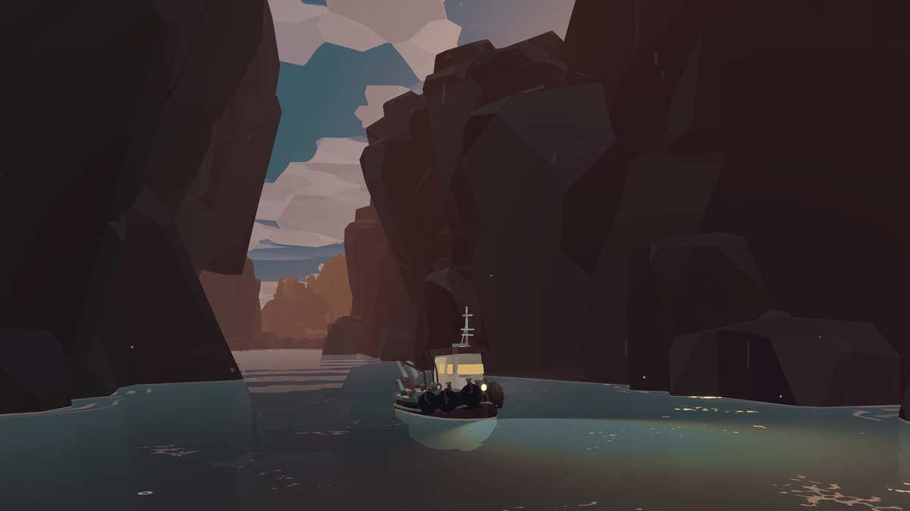
同一套驾船循环 · 冒险卡通The same sailing loop · cartoon adventure
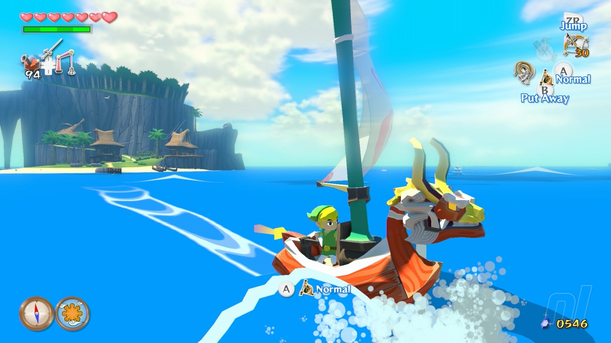
不要用「奇幻 / 写实」代替美学；不要为了风格再加一套新玩法。Don’t replace aesthetics with “fantasy / realism.” Don’t add a new mechanic for style.
Murray 2017 · Hamlet on the Holodeck · Carson 2000 · big picture
玩法判断和美学感受Play-judgment and aesthetic feeling
《Celeste》：冲刺、攀爬、体力，和 Madeline 的情绪，用的是同一座山。In Celeste, dash / climb / stamina and Madeline’s feelings use the same mountain.
没有难度，抽不出循环，后面的世界是空的。Without difficulty there is no loop, and the world after it is empty.
Suits 1978 · The Grasshopper · Juul 2013 · The Art of Failure
练习 A–CExercises A–C
3～5个动词；有哪些阻力3–5 verbs; what resistances
Anthropy & Clark 2014 · Juul 2013
多挑战链接的节奏感：对比/因果/反复/间歇，而不是越来越难Rhythm of linked challenges: contrast / cause / refrain / rest — not just getting harder
Koster 2013 · Jenkins 2004 · Schmidt 1975
地点/人文痕迹/谁/美学Place / human traces / who / aesthetics
Gibson 1979 · Fernández-Vara 2011 · Murray 2017
填不满 C = 循环没锁。If you cannot fill C, the loop is not locked.
参考文献References
作品：Works: Celeste · Dredge · The Wind Waker · Breath of the Wild · Portal · Papers, Please · Outer Wilds · Majora’s Mask · Sailing